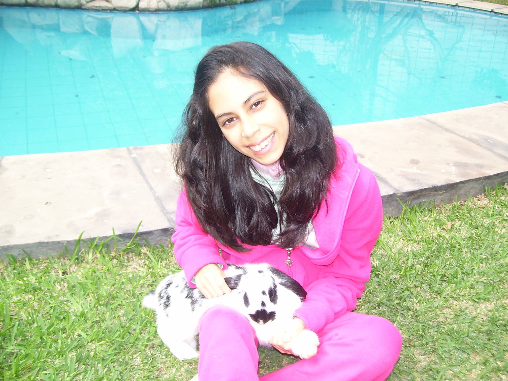

Sobre mi

Soy Daniela San Martín, tengo 15 años y aprendí a ver la vida desde la fe y la esperanza. A través de este blog comparto mis pensamientos, luchas, sueños y experiencias con Dios, con la ilusión de que cada palabra pueda inspirar a alguien más a no rendirse, a creer y a valorar las pequeñas cosas de cada día.
Amo la música y me encanta alabar a Dios, porque en cada melodía encuentro fuerza, alegría y paz.